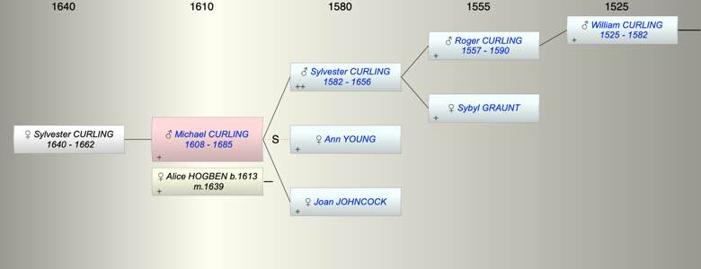

| [Index] |
| Michael CURLING (1608 - 1685) |
|  |
| b. 1608 at St Peter, Thanet |
| m. 15 Jul 1639 Alice HOGBEN (1613 - ) at Canterbury |
| d. 1685 aged 77 |
| Parents: |
| Sylvester CURLING (1582 - 1656) |
| Joan JOHNCOCK |
| Siblings (1): |
| Robert CURLING (1615 - ) |
| Children (1): |
| Sylvester CURLING (1640 - 1662) |
| Events in Michael CURLING (1608 - 1685)'s life | |||||
| Date | Age | Event | Place | Notes | Src |
| 1608 | Michael CURLING was born | St Peter, Thanet | Note 1 | ||
| 15 Jul 1639 | 31 | Married Alice HOGBEN (aged 26) | Canterbury | Note 2 | |
| 1640 | 32 | Birth of daughter Sylvester CURLING | St Lawrence | Note 3 | |
| 1656 | 48 | Death of father Sylvester CURLING (aged 74) | St Lawrence | Note 4 | |
| 1662 | 54 | Death of daughter Sylvester CURLING (aged 22) | St Peter, Thanet | Note 5 | |
| 1685 | 77 | Michael CURLING died | |||
| Personal Notes: |
|
MW wrote:
Michael Curling of St Lawrence, yeoman, dated 19 Oct 1665 proved 10 Nov 1665 [A72/134]. He gave land to several cousins, and money to several godchildren. Michael, whose only child Silvester, d, 1662 aged 21, unm, was son of Silvester & Joan (Jancocke) Curling, and because Michael identified children of two uncles, his father Silvester can be identified as son of Robert (sic should be Roger), c.1520-1586 by his first wife Sybil. |
| Created on a Mac™ using iFamily for Mac™ on 8 Oct 2023 |